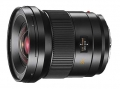

器材库 > 120中幅镜头 > SUPER-ELMAR-S 24/3.5 ASPH.

详细规格
镜头类型
超广角镜头
发布日期
2012-09-17
厂家推荐价格
5,330.00 （英镑）
焦距
24mm
等效35mm画幅焦距
19mm
最大光圈
f/3.5
最小光圈
f/22
视角（对角）
96.6
视角（水平）
86.5
视角（垂直）
63.9
镜头结构
12片/10组
非球面镜片
3片
低/超低色散镜片
3片
最近对焦距离
40cm
最大放大倍率
0.088倍
镜头卡口
Leica M
防抖
否
颜色
黑色
尺寸
101x112mm
重量
1110g
安然踏步2014-05-25 19:315 分
操作性 5.00耐用性 5.00性价比 5.00解像力 5.00色彩还原 5.00机械结构 5.00